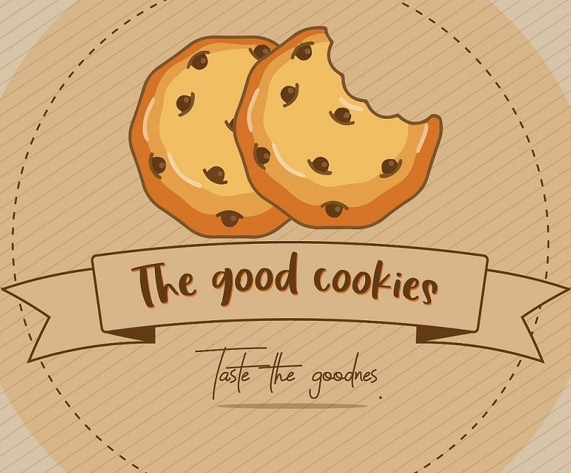

Historia The Good Cookies
The good cookies es una galleteria que nace en febrero de 2020 en Medellín - Antioquia. Sus inicios se dan en la universidad de Antioquia y luego pasa al mercado digital creando una página en la red social instagram el día 15 de junio. Esta empresa se dedica a la elaboración de galletas de diferentes sabores (chocochips, chocojet, red velvet y oreo) y su distribución se da en toda el área metropolitana.
